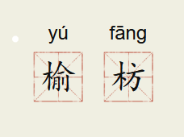

过松源晨炊漆公店六首·其一

杨万里(宋代)
侧塞千山缝也无，上天下井万崎岖。
昨朝曾过芙蓉渡，寻到溪源一线初。
写景
拂舞词
温庭筠〔唐代〕
黄河怒浪连天来，大响谹谹如殷雷
龙伯驱风不敢上，百川喷雪高崔嵬。
二十三弦何太哀，请公勿渡立徘徊。
下有狂蛟锯为尾，裂帆截棹磨霜齿
神椎凿石塞神潭，白马参覃赤尘起。
公乎跃马扬玉鞭，灭没高蹄日千里。
咏物

榆树与枋树。比喻狭小的天地。

佚名 寒江舟渡图局部
惶恐滩头说惶恐，零丁洋里叹零丁。
文天祥《过零丁洋》
写景
诗文
唐诗三百
古诗三百
宋词三百
小学古诗
初中古诗
高中古诗
小学文言
初中文言
高中文言
宋词精选
古诗十九
诗经
楚辞
乐府
写景
咏物
春天
夏天
秋天
冬天
写雨
写雪
写风
写花
梅花
荷花
菊花
柳树
月亮
山水
写山
写水
长江
黄河
儿童
儿童
写马
田园
边塞
地名
节日
春节
元宵
寒食
清明
端午
端午
中秋
重阳
怀古
抒情
爱国
离别
送别
思乡
思念
爱情
励志
哲理
闺怨
悼亡
写人
老师
母亲
友情
战争
读书
惜时
忧民
婉约
豪放
民谣
古文观止
更多>>